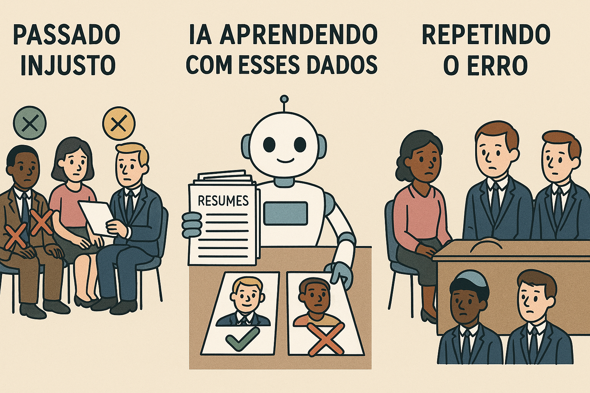

A ética em Inteligência Artificial (IA) é um campo cada vez mais relevante à medida que algoritmos e sistemas automatizados ganham espaço em decisões sociais, políticas e econômicas. Questões como viés nos dados, discriminação algorítmica e invasão de privacidade mostram que a tecnologia não é neutra: ela reflete as escolhas humanas por trás de sua criação. Por isso, é fundamental discutir quem está desenvolvendo essas ferramentas, com quais objetivos e quais impactos elas causam em diferentes grupos sociais, especialmente os mais vulneráveis.
Promover uma IA ética significa garantir transparência, responsabilidade e inclusão em todo o seu ciclo de desenvolvimento. Isso inclui revisar os dados usados para treinar modelos, testar os algoritmos em diferentes contextos e criar legislações que protejam os direitos das pessoas. Mais do que eficiência, a IA deve ser construída com base em valores humanos, respeitando a diversidade e promovendo justiça. Afinal, o avanço tecnológico só tem sentido quando beneficia a todos — e não apenas a uma minoria.